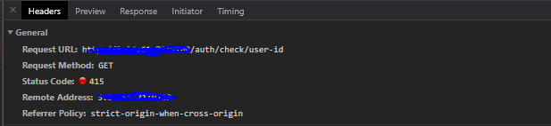
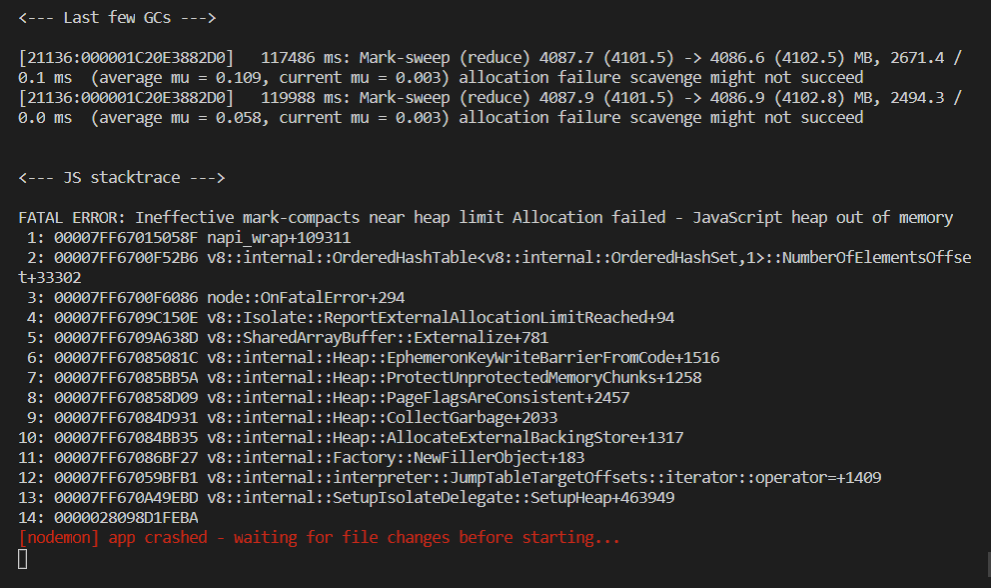

HTTP code 405
<문제 발생>
405 Method Not Allowed
잘못 된 메소드 사용 시 발생
서버에서 허용하지 않은 메소드를 사용했거나
get을 post 했거나 post를 get하였을 때 발생한 문제(get -> post or post -> get)
<문제 해결>
post를 get으로 수정(*내 경우)
HTTP code 415

<문제 발생>
415 Unsupported Media Type
지원하지 않는 미디어 포맷
서버로 보내는 데이터에 대해서 일어나는 문제
(서버에서 원하는 데이터가 안 보내지거나 데이터 타입이 잘못된 경우 등에서 발생)
<문제 해결>
- Header값을 채워서 보내기
Content-Type : 데이터의 타입을 나타내는 값 ex) application/json
Accept : 클라이언트가 선호하는 미디어 타입 값
- get일 때 헤더를 채워도 계속적으로 415 에러가 나타난다면(*내 경우)
{} 빈 객체를 보내볼 것
body가 null일 경우 415가 뜰 수도 있음.
가끔 data가 없어서 에러가 생기는 경우가 있음.
JavaScript_heap_out_of_memory

<문제 발생>
npm run dev를 통해 실행하던 중 터미널에서 위 경고창 등장
구글링을 통해 메모리부족 문제라고 파악했으나 메모리 문제가 아니었음.
나의 경우 컴포넌트의 오류
<문제 해결>
컴포넌트를 조금씩 지워서 문제인 컴포넌트를 확인 후 수정(*내 경우)